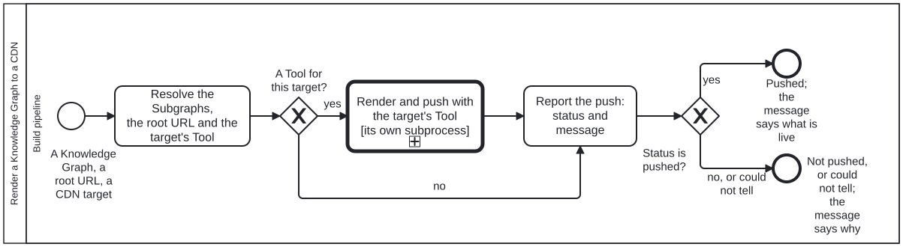

Generated from
cat-harness/processes/process/render-kg-to-cdn.bpmnbygen-processes-viz.ts— do not edit here. All processes
Process_RenderKgToCdn · strict · 3 step(s)
Render a Knowledge Graph — the whole of it, or a list of its Subgraphs — for publication to a CDN at a publication root URL, and report a STATUS and a MESSAGE. Owner, 2026-09-30: “render content of a KG (or list of subgraphs within) for publication to a CDN at a given publication root URL … independent of staging vs publication … just rendering … output is status of push to CDN + message”.
STAGING AND RELEASE ARE THE SAME PROCESS. A preview is this with a root under the release root; a release is this with the release root. What differs — who may start it, what is verified first, what else on the host must survive the push — belongs to the CALLER: feature-staging and docs-site-publish call this and keep their own steps around the call.
TOOL-AGNOSTIC ON PURPOSE. Owner, 2026-09-30: “tools can describe their own specific subprocesses if needed to not bog down general skills”. The one call activity names the skill; the Tool for the chosen target satisfies it and lists its own subprocesses, which is what the call descends into. For GitHub Pages that is the gh-pages Tool and bootstrap-tools’ render-kg-to-github-pages. No step here is GitHub’s.

render-kg-to-cdn skill without calling this process: Draft, review and publish — activity-calls-skill-process asks whether each should be a call activity.| lane | role | what it does here |
|---|---|---|
| Build pipeline | build-pipeline |
Whoever renders: a workflow running the Tool’s commands, or an agent running the same ones. A fixed program either way — the judgement about whether to publish was made by the caller before it got here. |
Every one of the 3 step(s) is documented.
| step | lane | skill / sub-process | what it does |
|---|---|---|---|
Resolve the Subgraphs, the root URL and the target’s ToolTask_Resolve |
Build pipeline | render-kg-to-cdn |
Every Subgraph id asked for must be one the declaration lists; none means the whole graph. The root URL is the one given. The target’s Tool is the one that satisfies: ["render-kg-to-cdn"] for that CDN — gh-pages for GitHub Pages. A caller that already rendered and verified its tree hands the tree over instead of the graph, and the Tool pushes it without rendering again. |
Render and push with the target’s Tool [its own subprocess]Call_ToolSubprocess |
Build pipeline | render-kg-to-cdn |
BOUND BY THE TOOL, so no calledElement is written here: the activity names the skill, the Tool satisfies it, and the Tool’s subprocesses are what this descends into — for gh-pages, bootstrap-tools’ render-kg-to-github-pages (make sure gh-pages exists and Pages serves it, stage, check the staging, commit onto gh-pages, check what is served). A diagram that named it would make every other CDN a second copy of this process. Whatever the Tool, it returns the two outputs below. |
Report the push: status and messageTask_Report |
Build pipeline | render-kg-to-cdn |
The output, on every path: pushed, not-pushed or could-not-determine, and one message — what is live (a commit), at which root URL, and the QA result. From the no-Tool branch the status is not-pushed and the message names the target nobody implements. A check that could not look is never reported as pushed. |
Every one of the 2 decision(s) is documented.
| decision | what decides it | branches |
|---|---|---|
A Tool for this target?GW_Tool |
Answered by the Tool registry: does any Tool satisfy render-kg-to-cdn for the named CDN? no reports not-pushed and names the missing Tool, rather than guessing a mechanism. |
yes → Render and push with the target’s Tool [its own subprocess] no → Report the push: status and message |
Status is pushed?GW_Pushed |
Read off the status just reported. Anything but pushed ends at End_NotPushed, and the caller decides what that means for it — an alert, a retry, a person. |
yes → Pushed; the message says what is live no, or could not tell → Not pushed, or could not tell; the message says why |